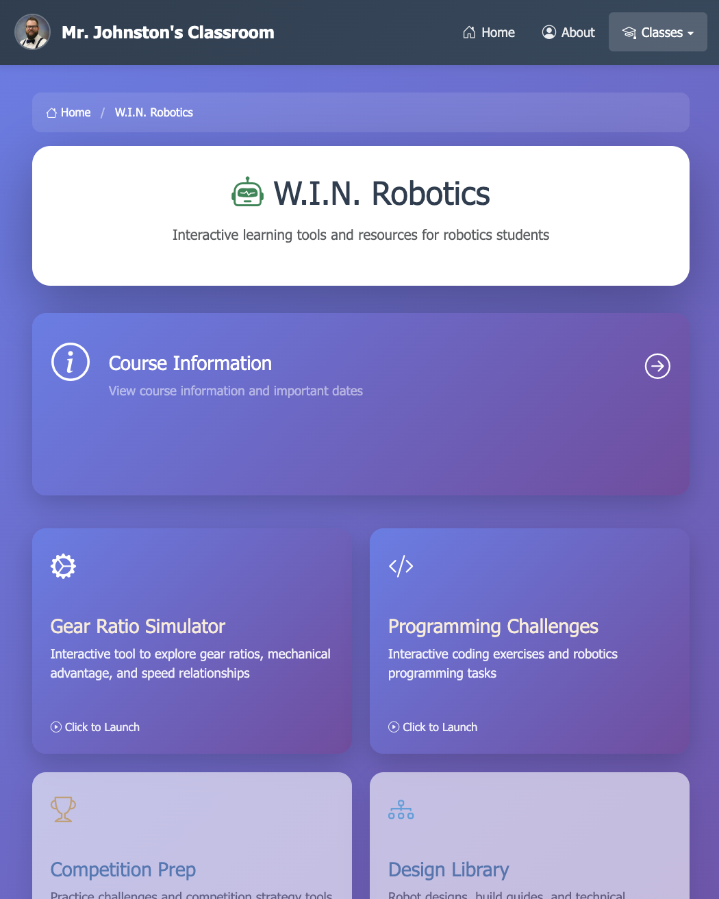
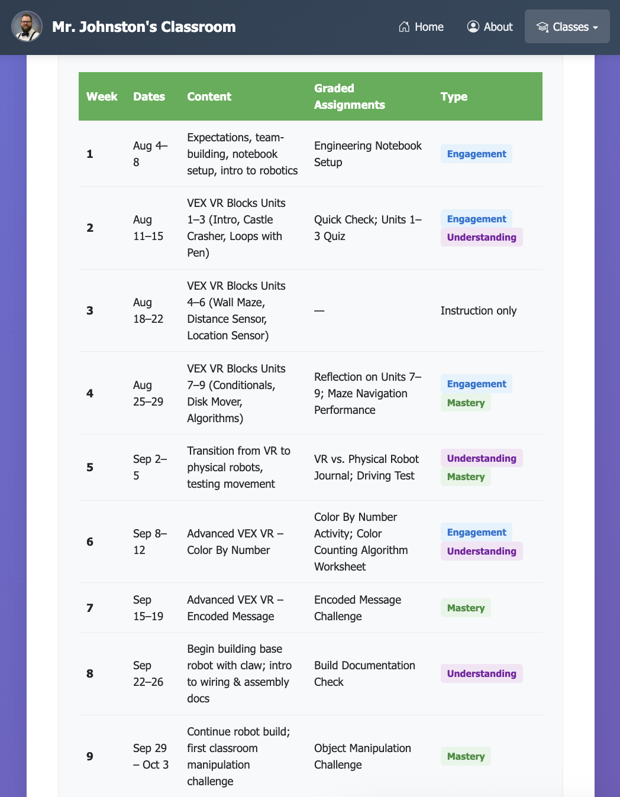

Aviso importante: Esta página ha sido traducida automáticamente por inteligencia artificial (IA) y puede contener errores o inexactitudes. Para obtener información precisa, consulte la versión en inglés o comuníquese conmigo directamente.
¡Bienvenidos a Nuestra Comunidad de Ingeniería!
Estimadas familias,
Gracias por depositar su confianza en mí para la educación de su hijo(a). Les pido disculpas por la demora en este mensaje; quise asegurarme primero de que todos los estudiantes se adaptaran adecuadamente al horario y al material que estaremos utilizando este año escolar.
Es muy importante para mí trabajar en colaboración con ustedes, los padres, para garantizar el éxito académico y personal de sus hijos. Agradezco de antemano su paciencia y comprensión durante este periodo de ajuste en la clase.
Espero con entusiasmo poder trabajar en equipo con ustedes a lo largo de este año escolar.
Acerca de Mí
Soy el Sr. Johnston, y tengo el privilegio de enseñar Principios de Ingeniería Aplicada y Robótica W.I.N. en Hornedo. Con años de experiencia tanto en la industria como en la educación, he desarrollado una filosofía de enseñanza centrada en el aprendizaje práctico, expectativas claras y aplicaciones de ingeniería del mundo real. Creo que cada estudiante tiene el potencial de pensar como un ingeniero, y mi papel es nutrir ese potencial a través de orientación estructurada y aliento.
En mi aula, su estudiante experimentará un plan de estudios cuidadosamente elaborado que equilibra el desafío con el apoyo. Practicarán el pensamiento de diseño, construirán e iterarán prototipos, documentarán su proceso de ingeniería y aprenderán a comunicar sus ideas profesionalmente—habilidades que les servirán bien en cualquier trayectoria profesional futura. Mantengo rutinas consistentes y expectativas claras, lo que ayuda a los estudiantes a sentirse seguros y confiados mientras enfrentan nuevos desafíos.
Tenga la seguridad de que su estudiante está en un ambiente de apoyo donde los errores se ven como oportunidades de aprendizaje, se celebra la creatividad y se reconoce cada logro, grande o pequeño. Mantengo altos estándares mientras proporciono el andamiaje que los estudiantes necesitan para alcanzarlos con éxito.
Puede aprender más sobre mi experiencia, filosofía de enseñanza y expectativas del aula aquí: Lea mi página "Acerca de mí".
¿Dónde Puedo Encontrar Más Información Sobre la Clase?
He diseñado mi sitio web del aula para que sea su centro principal para entender qué está aprendiendo su estudiante y cómo está progresando. Todo está organizado intuitivamente, facilitando que se mantenga conectado con su viaje educativo. El sitio web se actualiza regularmente con nuestra descripción general del programa del semestre y anuncios importantes, asegurando que siempre esté informado sobre las actividades del aula.
Consejo rápido: Para comenzar, simplemente visite mi sitio web del aula y seleccione la tarjeta del curso que coincida con la clase de su estudiante. Los elementos están claramente marcados: aquellos con una insignia A indican la ruta de Principios de Ingeniería Aplicada, mientras que aquellos con una insignia B muestran la ruta de Robótica W.I.N.
Pasos de Navegación:
-
Vaya al sitio principal y seleccione la clase.

Captura de pantalla 1. Sitio principal con dos opciones de clase.
-
Elija su ruta.
Ruta A – Principios de Ingeniería Aplicada

Captura de pantalla 2a. Página de inicio del curso PAE.

Captura de pantalla 3a. Información del curso y plan de estudios de PAE.
Ruta B – Robótica W.I.N.
Captura de pantalla 2b. Página de inicio de Robótica WIN.

Captura de pantalla 3b. Información del curso de Robótica WIN.
-
Revise el alcance, la secuencia y los tipos de trabajo calificado.

Captura de pantalla 4. Vista de ejemplo de la semana con tipos de tareas calificadas.
Entendiendo Schoology: Su Ventana al Aprendizaje Diario
Mientras que mi sitio web público proporciona la imagen general, Schoology es donde ocurre la magia del día a día. Este es nuestro sistema seguro de gestión del aprendizaje donde los estudiantes acceden a las tareas, envían trabajos y reciben retroalimentación personalizada. He estructurado todo en Schoology con claridad y consistencia en mente: encontrará carpetas organizadas para Planes Semanales, secciones de tareas claramente etiquetadas y rúbricas detalladas para cada proyecto.
Creo en la transparencia completa con las familias, por lo que los animo a pedirle a su estudiante que les muestre su cuenta de Schoology regularmente. Cuando miren juntos, verán que cada tarea viene con instrucciones paso a paso, expectativas claras y rúbricas que eliminan las conjeturas. Esta estructura ayuda a los estudiantes a desarrollar independencia mientras se asegura de que siempre sepan cómo se ve el éxito.
Consejo para padres: La organización consistente significa que su estudiante puede encontrar fácilmente recursos cuando los necesita, reduciendo el estrés y promoviendo la confianza. A continuación se muestran capturas de pantalla de la vista del estudiante para que sepa exactamente qué ve su hijo cuando inicia sesión.

Captura de pantalla 5. Página de inicio del curso del estudiante en Schoology—observe la estructura organizada que ayuda a los estudiantes a mantenerse encaminados.

Captura de pantalla 6. Diseño de la carpeta de Planes Semanales—todo lo que su estudiante necesita para la semana en una ubicación organizada.

Captura de pantalla 7. Una tarea de muestra que muestra instrucciones claras y rúbrica detallada—sin sorpresas, solo expectativas claras.
Resumen Rápido para Padres Ocupados:
- Sitio Web Público: Su recurso principal para la descripción general del curso, el alcance del plan de estudios, los objetivos de aprendizaje y ver los emocionantes proyectos que creará su estudiante
- Schoology: El centro diario para tareas, envíos, retroalimentación detallada y calificaciones.
- Ambas plataformas trabajan juntas para crear una experiencia de aprendizaje integral que mantiene a todos—estudiantes, padres y maestro—conectados e informados
Mantengámonos Conectados
Su participación en la educación de su estudiante es invaluable, y estoy aquí para apoyar tanto a usted como a su hijo en cada paso del camino. Ya sea que tenga preguntas sobre las tareas, quiera entender un concepto que su estudiante está aprendiendo, o simplemente quiera compartir el entusiasmo de su hijo sobre un proyecto, doy la bienvenida a su comunicación. Juntos, podemos asegurar que su estudiante tenga una experiencia enriquecedora y que desarrolle confianza en ingeniería y robótica.
Normalmente respondo a los correos electrónicos dentro de 24 horas durante la semana escolar, y siempre estoy feliz de programar llamadas telefónicas o reuniones si prefiere discutir el progreso de su estudiante con más detalle. No dude en comunicarse conmigo—ninguna pregunta es demasiado pequeña, y su participación marca una tremenda diferencia en el éxito de su estudiante.
Información de Contacto:
Correo electrónico: majohnst@episd.org
Mejores horarios para contactarme: 7:30 AM - 4:30 PM en días escolares
Gracias por ser un socio activo en el viaje de ingeniería de su estudiante. Su apoyo y aliento en casa amplifica todo lo que hacemos en el aula, y me siento honrado de trabajar con su familia este año.